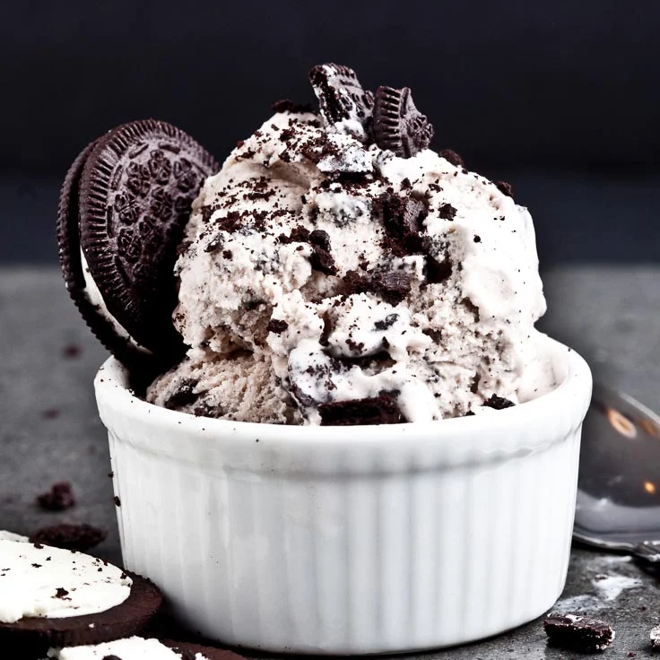

Welcome To Toolna!
Hello! Welcome to Toolna, your interactive cookbook and culinary companion. Toolna is a dynamic space where you can explore a vast collection of recipes and share your own culinary creations with our vibrant community. We aim to enhance your cooking experience far beyond that of a traditional cookbook. Toolna offers a wide array of features designed to make cooking enjoyable and efficient. Whether you're a novice in the kitchen or a seasoned chef, our platform provides step-by-step instructions that help you manage cooking times with ease. Each recipe is carefully curated to ensure you achieve the best results, with detailed guidance from start to finish.
Garlic Bread

Prep Time:
5 mins, cook time: 15 mins; yields 12 servings; oven at 375
-
½ cup butter, softened
-
3 tablespoons olive oil
-
4 cloves garlic, minced
-
1 tablespoon garlic powder
-
1 tablespoon chopped fresh parsley
-
loaf French bread
Directions:
Preheat the oven to 400 degrees F (200 degrees C). Line a baking sheet with aluminum foil. Mix butter, olive oil, minced garlic, garlic powder, parsley, and salt in a bowl until well combined. Cut bread loaf into 1-inch slices and spread garlic mixture over each slice. Place each on a baking sheet. Wrap with additional aluminum foil. Bake in the preheated oven until bread is crispy and heated through, 25 to 30 minutes. Let cool and enjoy!
Yogurt Parfait
Prep Time:
5 mins, 1 serving
-
1 cup yogurt, flavor of your choice
-
1 cup fresh fruit
-
1/3 cup granola
Directions:
In a tall glass, layer one-third of the yogurt, one-third of the fruit, and one-third of the granola. Repeat to make 2 more layers, ending with the granola.
Bacon and Avocado Wrap
Prep Time:
10 minutes, cook time: 5 minutes, serves 1
-
1/2 cup guacamole
-
1 tortilla
-
3 slices pepper jack cheese
-
3 slices cooked bacon
Directions:
Spread guacamole on tortilla. Layer cheese on top of guacamole.
Place bacon on top of cheese. Fold the top and bottom of the tortilla toward the middle. Then roll tortilla from left to right to close. Wrap in plastic wrap until ready to eat.Breakfast Burritos

Prep Time:
Cook time: 10 minutes, serves 2
-
1 cup frozen diced potatoes with onion and 2 teaspoons canola oil.
-
4 eggs
-
Pinch of salt
-
Pinch of Ground Black Pepper
-
1/3 cup shredded cheese
-
1/4 cup salsa
-
2 tortillas
Directions
On the stove: Coat a medium sized skillet with cooking spray and heat over medium high heat for about 1 1/2 minutes. Carefully add frozen vegetables in an even layer. Cover and cook, turning with a spatula every 2 to 3 minutes, for a total of 7 to 10 minutes, until light golden brown. transfer to a bowl. Wipe the pan with paper towels and coat again with cooking spray. In a bowl, wisk eggs with salt and pepper. Add to skillet and scramble eggs.
In the center of each tortilla, layer half of the eggs, vegetables, cheese, and salsa in a vertical line. To roll burritos, fold the bottom quarter of the tortilla toward the top and over the filling. Fold in the left third of the tortilla toward the center, then fold the right third in over it. Fold down the top to close burrito. Pick it up, holding the bottom and front seam closed.
Spread guacamole on tortilla. Layer cheese on top of guacamole.
Place bacon on top of cheese. Fold the top and bottom of the tortilla toward the middle. Then roll tortilla from left to right to close. Wrap in plastic wrap until ready to eat.Cookies and Cream Ice Cream
Prep Time:
30 mins, total time: 30 mins; yields 2 servings
-
1 cup whole milk, chilled
-
¾ cup granulated sugar
-
2 cups heavy cream, chilled
-
2 tsp pure vanilla extract
-
1 cup coarsely chopped Oreos, or any brand chocolate sandwich cookies
Directions
In a chilled bowl, whisk together milk and sugar until sugar is dissolved. Stir in heavy cream and vanilla. Pour mixture into ice cream maker’s freezer bowl. Let it churn for about 20 minutes (or according to your machine’s manufacturer instructions.) Add in the chopped Oreos and keep churning for another 5-10 minutes or until mixture is thick and creamy. If your machine’s instructions vary for add-ins, please follow those instructions instead. Use rubber spatula to transfer ice cream to a freezable container. Cover airtight and place in freezer about 2 hours to set up firmly. Enjoy!
Chicken Noodle Soup

Prep Time:
20 mins, cook time: 20 mins, yields 8 servings
-
1/2 Tablespoon butter
-
2 ribs celery , diced
-
3-4large carrots diced
-
1 clove garlic , minced
-
10 cups chicken stock , or broth*
-
1 teaspoon salt , to taste
-
½ teaspoon freshly ground black pepper , to tast
-
1/8 teaspoon dried rosemary ,or more, to taste
-
1/8 teaspoon dried sage
-
1/8 teaspoon crushed red pepper flakes
-
1 batch homemade egg noodles , or 5 cups dry egg noodles, farfalle or other bite-size pasta
-
3 cups rotisserie chicken
-
1 teaspoon better than bouillon chicken flavor , (or more, as needed), or chicken bouillon granules
Directions:
Add butter, diced celery and carrots to a large stock pot over medium-high heat. Saute for 3 minutes. Add garlic and cook for another 30 seconds. Add chicken stock and season the broth with rosemary, sage, crushed red pepper, and salt (definitely TASTE the broth before adding more salt), and pepper. Taste and add a spoonful of “better than bullion” chicken or chicken bouillon cubes or granules as needed. Bring broth to a boil. Add noodles (either uncooked homemade egg noodles, or dry store-bought pasta) and cook just until noodles are al dente. If using store-bought noodles, be cautious not to overcook them! Remove pot from heat as soon as they are just barely tender. The noodles will continue to cook once you remove the pot from the heat, and you don’t want them mushy. Add chicken meat from the rotisserie chicken. Taste the broth again and add more seasonings, if needed. Enjoy!
Icebox Cake
Prep Time:
No bake time, yields 8 servings
-
1 1.4-ounce box chocolate pudding mix
-
2 cups milk
-
1 14.4-ounce box chocolate graham chrackers
-
1 8-ounce tub whipped topping
Directions:
Make pudding with the milk according to package directions. Refrigerate until set, about 5 minutes. Place two layers of graham crackers on the bottom of a 9-inch square baking pan, using a knife to cut the crackers to fit, if necessary. Spread half the pudding on top of graham crackers. Spred one third of the whipped topping on top of pudding. Top with another layer of graham crackers. Repeat step 3. Top the final layer of graham crackers with the remaining whipped topping. Cover pan loosely with plastic wrap and refrigerate for at least 4 hours. Use a metal spatula to cut and serve ice box cake.
Chicken Chili
Prep Time:
20 mins, cook time: 30 mins, yields 2 servings
-
2 tablespoons olive oil, divided
-
1 pound chicken breast
-
1 teaspoon minced garlic
-
1/3 cup minced onion
-
1 tablespoon Italian seasoning
-
1 medium zucchini, peeled and chopped
-
1 15-ounce can diced tomatoes
-
1/2 15-ounce can red kidney beans
-
1 8-ounce can tomato sauce
-
1/2 teaspoon salt
Directions:
In a large skillet, heat 1 tablespoon of the oil over medium-high heat for 1 minute. Add chicken and cover. Cook for 8 minutes per sie, or until no longer pink in the center. Transfer to a plate, let cool, and chop into bite sized pieces. Add the rest of the ingredients to skillet and cook for an additional 30 minutes. Transfer half of the mixture to a container for up to 3 days for use.
Tuna Sub

Prep Time:
30 mins, total time: 30 mins; yields 2 servings
-
1 5-ounce can tuna in water, drained
-
1 tablespoon minced onion
-
1/4 cup minced celery
-
Pinch of ground black pepper
-
1 tablespoon mayonnaise
1 long sandwich roll
Directions
Place tuna in a small bowl. With a fork, flake it into small pieces. Add onion, celery, salt, pepper, and mayonnaise. Mix until combined.
With a serrated or bread knife, slice the roll length-wise about three quarters of the way through, leaving the opposite side uncut. Open the roll like a book and place lettuce, cheese, and tuna mixture inside. Close roll and wrap in plastic wrap until ready to eat.